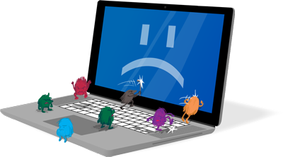

ŠKODY A DOPADY
- Spomalenie systému – počítač môže byť pomalší pri bežných úlohách alebo spúšťaní programov.
- Strata alebo poškodenie dát – niektoré vírusy môžu vymazať alebo zmeniť dôležité súbory bez možnosti obnovy.
- Neoprávnený prístup – hackeri môžu získať prístup k súkromným údajom, ako sú heslá, e-maily alebo bankové údaje.
- Nežiaduca reklama – adware vírusy zobrazujú neustále vyskakovacie okná alebo presmerovávajú na pochybné stránky.
- Poškodenie hardvéru – v niektorých prípadoch môže dôjsť k preťaženiu komponentov alebo ich zlyhaniu.
